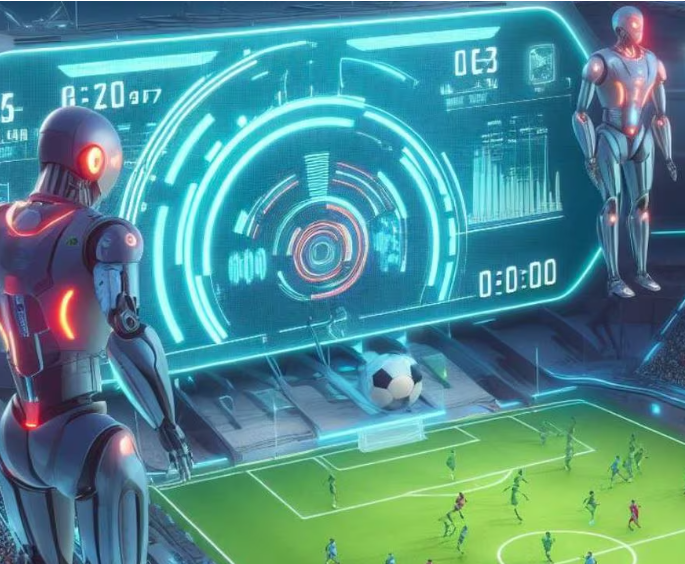

Innovación en la Liga: IA para el Análisis de Partidos
El club deportivo internacional ha dado un gran paso en la innovación tecnológica al implementar un sistema de inteligencia artificial (IA) para el análisis en profundidad de los partidos. Esta herramienta permite a los entrenadores y jugadores entender mejor las estrategias del oponente y mejorar su propio rendimiento.
